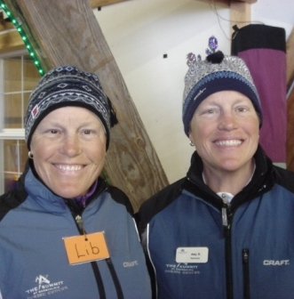
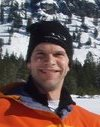
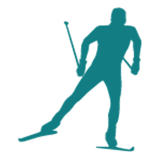
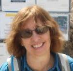
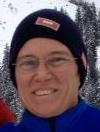
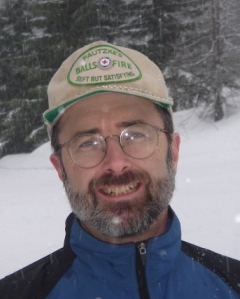
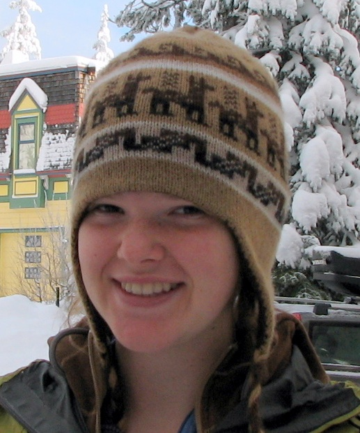
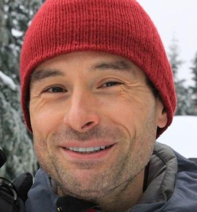
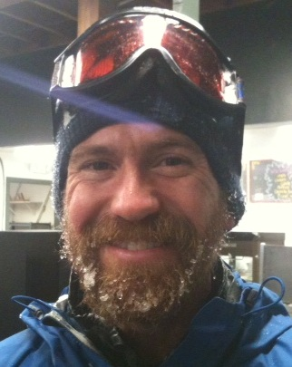
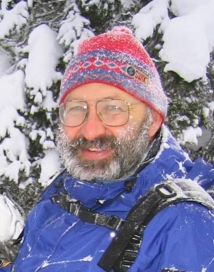

|  |
Amy and Lib teach our youngest skiers, the Treasure Trailers. Amy and Lib are 1999 recipients of
the Professional Ski Instructors of America's Service to Youth Award which
recognizes excellence in Youth and children's ski instruction. They received the Ski Magazine
"Instructor of the Year Award". Both have extensive background working with children as educational professionals,
as ski coaches who developed the curriculum we use, and as swim coaches.
They hold PSIA level-III certifications in Alpine and Nordic. |
|  |
Alan taught nordic skiing at the Summit in the 1990s
and returned to coach in 2008 after almost a decade hiatus to travel, go to graduate school, and have two kids.
He has also been a swim coach, a docent at a biological preserve, a big-wall climber, and a lecturer in environmental economics.
Alan holds a PSIA level-II certification in Nordic and is an
fisheries economist during
the week.
|
|  |
Bihn is a JNP alumni. This is his first year as a JNP instructor. Last year he
taught in the Outdoors For All program. |
|
Chad started skiing with the Summit in 1990 when he was encouraged to ski with the returning staff while celebrating his anniversary with his wife at Grand Junction. He has taught since 1991 at the Summit in XC, Tele and Alpine. Ten plus years of service as the Nordic representative to PSIA-NW was a thrill. Nordic skiing with his wife, daughter, son-in-law and grandkids is a dream come true. |
|  |
Debby holds a PSIA level-II certification in Nordic and PSIA Childrens Specialist I Certificate.
|
|  |
Eli has been teaching at the Summit Nordic Center since 1989,
joined the JNP in 2001, and became the JNP director in 2006.
Eli also coached at the West Yellowstone Ski Camp, teaches clinics for the
Washington Alpine Club
and holds a PSIA level-III certification in Nordic.
Eli loves all skiing---alpine, backcountry skiing and nordic racing---and before kids, she was an
avid climber. She coaches soccer in addition to skiing. During the week, she is a mathematician. |
|  |
Glenn joined the corps of instructors at Summit Nordic Center in 1989.
After several years teaching for the Seattle Country Day School Friday program, Glenn joined the Junior Nordic Program.
This January, Glenn celebrates his 40th year of skiing; ski mountaineering in the spring and summer is his favorite way to
spend time on skis. |
|  |
Helen started skiing with JNP in Treasure Trails at age four
and was in every class up from there. She taught with the JNP for 3 years while in high school and then
took haitus to go to college. Now she's back!
|
|  |
Jiri started skiing in the Czech Republic
when he was 4 years old and skied ever since.
He likes all types of skiing: cross-country, downhill, and backcountry.
In summer, he kayaks, runs marathons and plays volleyball.
Since 2009, Jiri has been teaching x-country skiing to challenged children
with Outdoors For All.
During the week, he engineers bridges. |
|  |
Josh has been coaching with the JNP since 2010 and holds a Level 1 PSIA certification.
He has taught soccer, music, martial arts, and bicycle safety, and was a volunteer climbing instructor for the Washington Alpine Club.
He has a black belt in Kajukenbo (Kung Fu), which, he assures us, is super relevant to working with young children.
In his spare time he is a bassist for Pineola and plays a lot of soccer. During the week, he is a high school teacher. |
|  |
Karel learned to ski in the Czech Republic.
He began instructing at the Summit Nordic Center in 1989 (with Glenn and Eli) and joined the
Junior Nordic Program in 2001. Karel holds a PSIA level-III certification in
Nordic and also teaches for the Washington Alpine Club.
When not nordic skiing, Karel straps on his backcountry skis. He has also coached soccer and before that chess. |
|
Tin has been coaching in the Junior Nordic Program for many years. He loves to nordic ski
and enjoys racing and tele skiing. Before kids, he was an avid big mountain climber. During the week, he is a flight-test engineer.
|